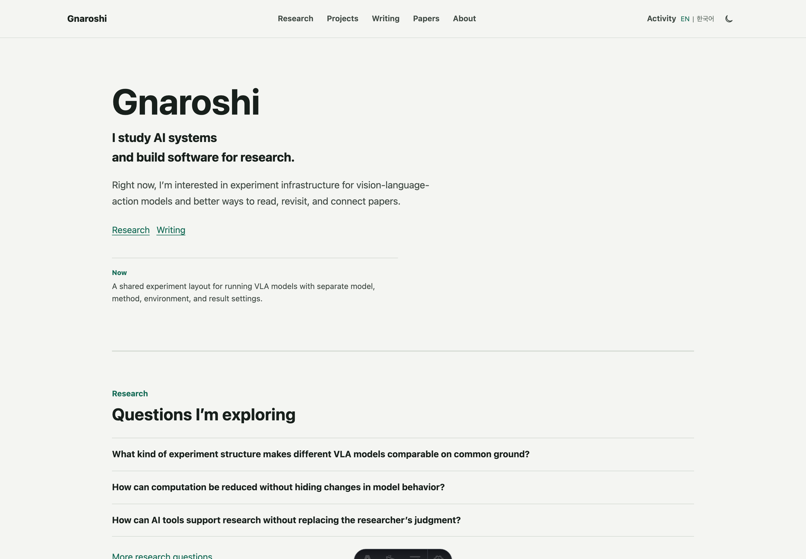

Actual rendered interface
gnaroshi.dev
desktop · Korean mobile · build provenance

Build verification
schemaVersion: 1 environment: local media review contentFeed: schemaVersion: 1 state: bootstrap-empty routes: / · /ko/ /research/ /projects/